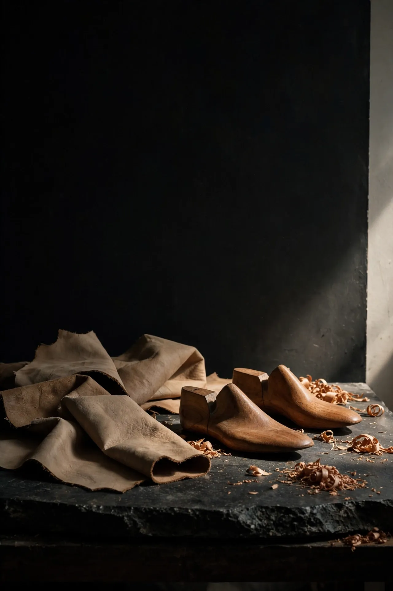

Koleksi I


Sepatu yang dibuat pelan, dipakai bertahun-tahun.
Kami membangun sepatu seperti orang membangun bangunan: dimulai dari pondasi, dikerjakan oleh spesialis masing-masing bagian, dan tidak dipercepat agar tepat waktu. Setiap pasang membawa nomor edisi — jumlahnya sengaja dibuat sedikit, supaya setiap jahitan tetap bisa ditelusuri ke tangan yang membuatnya.
Pilihan kurasi
Semua koleksi →Setiap pasang melewati sembilan pasang tangan.
86
jam kerja rata-rata
9
pengrajin tiap pasang
20
pasang per edisi
 Atelier — Yogyakarta
Atelier — Yogyakarta
Yang dipakai duluan
Uji coba batch pertama“Baru dua bulan dan kulitnya sudah mulai ikut bentuk kaki. Di awal terasa berat, sekarang malah jadi bagian yang paling nyaman dipakai seharian.”
Dimas A. — Sono Clog“Bunyi sol kayu di lantai itu cirinya. Talinya masih rapat walau tiap hari dipakai keluar masuk pasar.”
Rara P. — Laras Sandal“Ukuran saya sempat meleset, mereka minta foto ukuran kaki dari rumah lalu tukar sampai pas. Sabar sekali.”
Bimo S. — Derap Boot